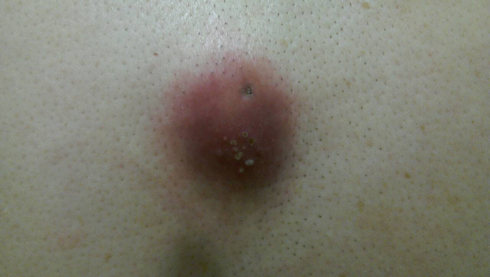
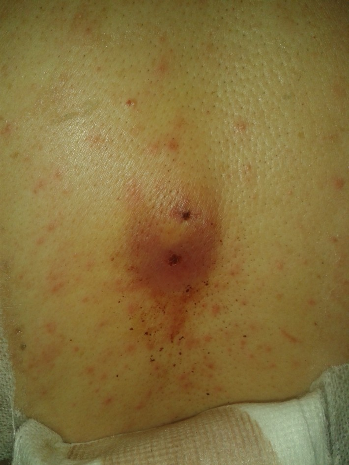
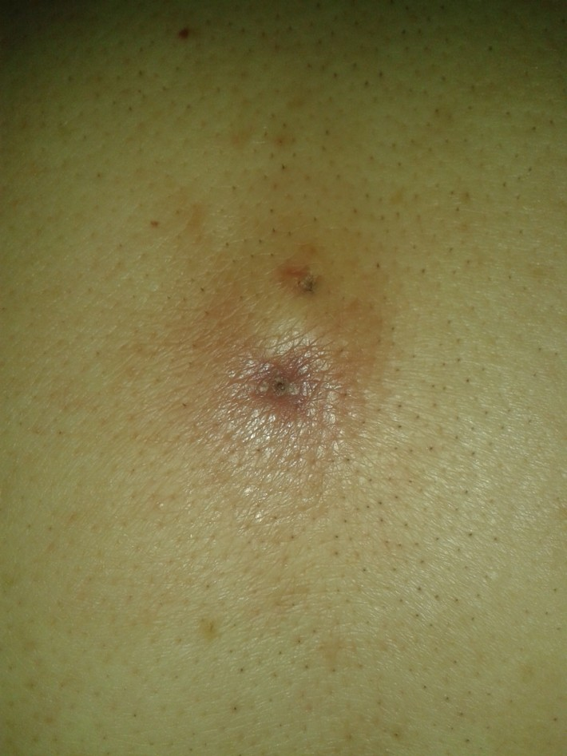

Acupuncture for Skin Boil on Back
I treated a gentleman recently who came in with a 3 x 3 cm skin boil on his mid-back, which is bigger than a 25 cent coin and elevated like a half-globe. 3 x 3 cm does not sound very big on black and white paper but when you personally see it, you would think it's big, and it is. The location of the boil is on a pre-existing lipoma. Lipomas don't warrant much attention because they are benign deposits of fat tissue. However, the case is different here because we have a boil that is on the lipoma. I won't get into details of whether the lipoma has turned into a boil or if the boil is separate from the lipoma. It doesn't really matter anyway.

1st visit, multiple white pus heads seen on the lower half of boil

2nd visit, 50% reduction in swelling

3rd visit, recovery
The boil has been going for 6 months, which is a long time for these things. It is red, inflammed, hard and painful. It oozes pus constantly, according to what the patient says. When I observed the patient's back, I saw that what he said is true, except for the pus part. Th boil when I saw it initially is in the process of pustulating with multiple pus heads, some small and some big. It is not actively oozing though. The patient's family members have tried to squeeze the pus out but the pus keeps coming. So I'm guessing what he meant was that it oozes easily on slight pressure.
There is a common problem in modern medicine when it comes to boils or any type of pustulating swellings. The common "wisdom" says you should not squeeze it because it would lead to "infection" which may be potentially "lethal" if it gets into the blood. Personally speaking from the Chinese Medicine point of view this isn't exactly right. Pus is dead material and it needs to come out. If pus is left in the swelling, the swelling will not go away because it is too congested with dead toxic waste material and new blood isn't going there to clean it off. The infection part as long as proper disinfecting procedures are carried out there should be almost 0 risk of "infection". Perhaps they were speaking to the general masses when they said this but I presume most people should know this too. If the swelling is left too long then you may have the potential of developing other problems. According to Chinese Medicine the only time you don't evacuate pus is when there is no pus. Clinicians usually know when there is or no pus on physical examination. In Chinese Medicine we also have ways to stimulate pus formation of course, which modern medicine does not have.
The pus needs to come out so that is what I did. I disinfected the area and used a lancet needle (which we sometimes use in Acupuncture to let out congested blood) on the multiple pus heads and sure enough the pus flowed out like somebody had tapped the bottom of a never-ending well. Pus is mixed with blood of course, looking like dark yellowish milky fluid. I must have spent 10 minutes and maybe over squeezing out and evacuating the deep seated pus that just won't stop. After a while of course, it finally cleared up a bit and I got more blood come out. Once I couldn't get much pus I stopped.
Do I stop here? NO. If they had already squeezed out pus themselves and I was able to get this much today then it will come back. There are deeper things down there that I cannot get. Should this person go for surgery? That is what he was going to do and have scheduled at the end of the year prior to coming in. But he came to see what could be done in the meantime because it's really bothering him. So what did I do?
I prescribed Chinese herbs that we use to get the body to evacuate its deeper pus out into the exterior. After a few weeks he came back and told me since taking the medicine the pus continued to come out by itself in great numbers. So much so he had to cover it with gauze to protect his shirt. But during the 2nd visit, the boil inflammation had shrunk by 50%. I gave more medicine. 3rd visit we got near 100% recovery, save for some darkening of the skin from recovering from a long-term inflammed boil. Patient has no pain anymore of course.
Side Note: Lipomas are benign but because it is a fat-deposited mass so the circulation there won't be as good as other normal tissues, and hence it explains why the boil would end up on the lipoma. To some extent, the lipoma turned into the boil or the pustulating process of the boil "ate" away the fat deposit, because once it has recovered, the lipoma had a dented area where the pus was most congregated before.
In modern medicine boils and inflammation can only be explained by bacterial infection but in TCM we also think emotional constraints are a huge factor.